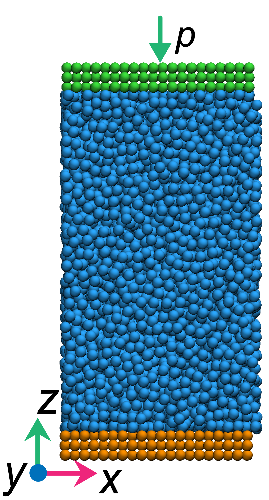
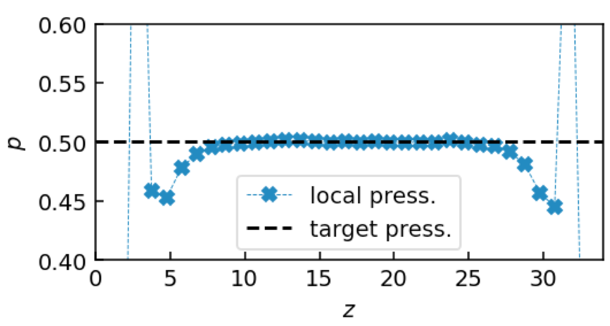

by Yawei Liu @Sydney, Australia 2021/03/07
In our studies on surface nanobubbles [1] and diffusio-osmotic flow [2], we often use a simulation box which contains a horizontal fluid-solid interfaces, and we often need to control the pressure in the fluid [see Fig.1]. A very straightforward method to do this is putting a top wall in the system and then applying an external force on the top wall. The total force imposed on the top wall \(F=-p\cdot L_x L_y\) with \(p\) the target pressure, \(L_x\) and \(L_y\) the dimensions of the simulation box in \(x\) and \(y\) directions, respectively (\(-\) means a positive pressure imposes a force in the \(-z\)-direction). During the simulations, the top wall moves as a rigid body, keeping fluctuating and acting as the controller to maintain a constant pressure in the fluid.

Fig.1 A simulation box with fluid particles (blue) confined between a fixed bottom wall (orange) and a free top wall (green) under an external pressure \(p\).
Here is the LAMMPS script of using such a mechanical approach to control the pressure in the system as shown in Fig.1.
# LJ fluid
units lj
atom_style atomic
boundary p p s
variable mytemp equal 0.8
variable mypress equal 0.5
lattice fcc 0.8
region box block -5 5 -5 5 0 20
create_box 3 box
create_atoms 1 box
mass * 1.0
pair_style lj/cut 1.5
pair_coeff * * 1.0 1.0 2.5
timestep 0.001
#wall
region upper block INF INF INF INF 32 INF units box
set region upper type 2
region lower block INF INF INF INF INF 2 units box
set region lower type 3
group fluid type 1
group upper type 2
group lower type 3
compute fluid_temp fluid temp/com
velocity fluid create ${mytemp} 87287 rot yes dist gaussian
fix mynvt fluid nvt temp ${mytemp} ${mytemp} 0.1
################################################################################
###press control
velocity upper set 0 0 0 units box
variable force equal -${mypress}*lx*ly/count(upper)
fix aveforce upper aveforce 0 0 ${force}
fix upper_nve upper nve
################################################################################
thermo_style custom step atoms c_fluid_temp lz
thermo_modify flush yes
thermo 1000
dump all_xyz all xyz 100000 result_atoms.xyz
#eq
run 500000
#pro.
compute stress fluid stress/atom NULL ke pair
compute cc01 fluid chunk/atom bin/1d z center 1 units box
fix press fluid ave/chunk 100 1000 100000 cc01 density/number c_stress[1] c_stress[2] c_stress[3] ave running overwrite file press.log
run 5000000In this script, the total force \(F\) is divided by the number of particles in the top wall, and then these per-atom forces are imposed on each particles in the top wall via the aveforce command so that the top wall will move as a rigid body during the simulation (note that the initial velocity of particles in top wall is zero).
We also compute the local pressure to confirm the mechanical approach is valid in the simulations. This is done by using compute stress/atom, compute chunk/atom and fix ave/chunk in the LAMMPS script. The computed results are written into the file named press.log. The local pressure \(p=-c\_stress[3]\cdot density\). Figure 2 shows the computed local pressure as a function of \(z\). We can see in the bulk region, the local pressure is equal to the target pressure we set, indicating the mechanical approach is valid. Note that near the wall, i.e., in the interface region, the local pressure departures from the target value due to the surface tension effect. However, if we compute the local pressure in \(z\)-direction using the Irving–Kirkwood method, we can obtain that even in the interface region, the local \(z\)-component pressure is also equal to the target value [see Ref.[2] for details].

Fig.2 The local pressure \(p\) as a function of \(z\). The horizontal dash line represents the target pressure.
© 2021 Yawei Liu. All content licensed under the Creative Commons Attribution License (CC BY-NC 4.0).